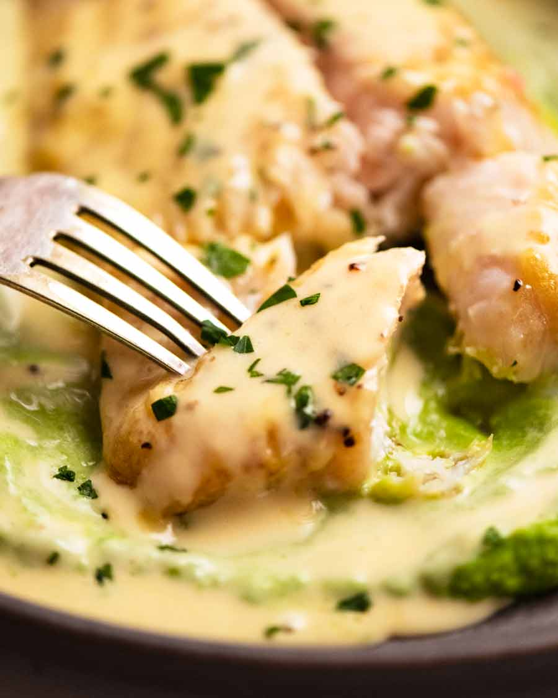

White Wine Flounder

Delicious pan-seared flounder in a homemade buttery white wine sauce with garlic and lemon.
Ingredients
- 1-2lb fresh flounder fillet
- 2 tbsp butter
- 2 tbsp extra-virgin olive oil
- 1 cup white wine
- 1 cup chicken broth
- 1/2 lemon
- 2 cloves minced garlic
- 1 chopped shallot
- 1 tsp thyme
- 1 tsp rosemary
- Salt and pepper to taste
Instructions
- Dry flounder fillet by dabbing with paper towel then season with salt and pepper.
- Heat oil in large skillet over medium-high heat. Cook fish for about 2 minutes each side until meat is flakey. Remove from skillet to plate for later.
- Add butter, shallot, and garlic to skillet. Wait until butter is melted and transparent, then add wine, broth, lemon juice, thyme, and rosemary.
- Add pinch of salt and pepper and bring pan to simmer. Wait until sauce is reduced by half.
- Place fish back in pan and spoon with sauce. Wait 1 minute then remove. Serve fish covered in sauce. Enjoy.